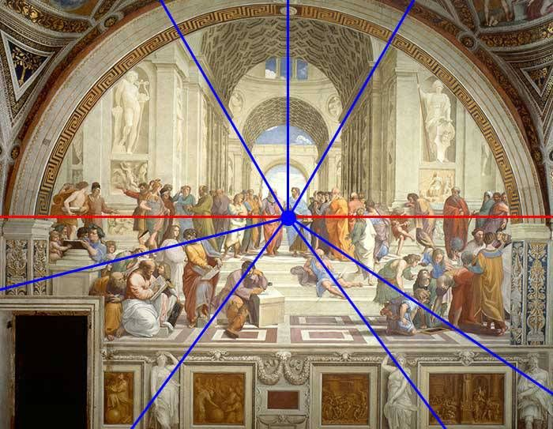

DISCONNECTION AND EPHEMERALITY
PROLOGUE
I am on my way. A bloody nose, wet palms; in my case airplane romance consists of bodily compromises. It is a Wednesday, as it is every mid-moment of every week, always. On the last occurring Wednesday, I was not aware that today – one Wednesday later – I would be here. If you think of it this way, Wednesdays keep on recurring into eternity, yet in shape they are never identical. What makes them Wednesdays?
Being here is the consequence of my desire for a different existence. Only recently I ended a stable and solid relationship of many years in quite a chaotic manner. I felt that I was in need of more unpredictability in my life. Almost simultaneously I lost my job, which was a bit too much of a good thing, but I guess that is me getting what I asked for.
Now I am here, ascending into the northern skies, directed towards the southern ones, in a sticky chair, next to me a Jewish man with monumental facial hair. There are many clouds and so there is turbulence. I hate flying. If I want to maintain a life like this, I will have to melt this hate into, at least, a moderate disliking.
I am flying to a big city in vicinity of the Mediterranean Sea upon the invitation of someone ‘light and liquid’ that I have met very recently. I am not even sure where we had this encounter, it could have likely been a non-physical space, because I cannot seem to attach a moment of hour to this meeting, no environmental notion of time; an occasion after lunch, a night at a club.
He and I do not really know each other, except I know that he embodies what I have been reading about and what I have been trying to become. I do not know what the coming days will look like, but I guess that should be part of the experience that I am looking for.
We have left the grounds of the earth and its human redundancy. The dark is caught up by the sun from the airplane window, it rises right there to my left side. At first glance, it gives the impression that the repetitive character of time makes it inherently linear. However, each rise of the sun is different, looks different and signifies a new type of beginning. The same way we think each Wednesday is another Wednesday, but it is actually never the same as the one before and the ones to come. Yet, calling these mid-week moments by a name, having them return in a set choreography functions as a reminder of stability, as something for us to hold on to.
I think of a drawing that Maurits Cornelis Escher made in 1961. It was actually a lithograph, paradoxically illustrated in a both clear and complex mathematical way, as Escher’s work tends to be. ‘Waterval’ shows a building with a mill against an abstract landscape. In the right corner, there is a woman hanging laundry, more down to the middle a man leaning against a wall, his gaze towards the descending water.
At first glance, the details seem true to nature. However, following the course of the water, it becomes evident that not only the dimensions of the structure are betrayal to the viewer’s eyes, the flow of water is also perpetual; it gives a suggestion of something that is endless, yet confined. The impossible waterfall feeds itself into eternity.“People are not able to grasp the notion of the constant stream of time someday coming to an end”, Escher said. “Even though there will be a moment that the earth will cease to revolve around its own axis and that of the sun, even though sometime there will be no more days and nights, no more summers and winters, time will always flow. At least, that’s how it appears to us.”
Last week, I was someone who stayed at home. This week, I am someone who mindlessly decided not to be so. Time kept the repetitive nature it always had, but the way I inhabit it became lighter, more volatile.
In Greek philosophy, panta rhei became an expression to confine the idea that everything ‘streams’. “It is impossible to enter the same river twice”, Heraclitus said. “It is not just the river that changes; it is also us. Our identity alters, we live with experiences that change us into someone else.” How our experiences alter our identity and thus in return make it into something that is always in flux is not just a contemporary reality. However, the speed and frequency with which these alterations happen and the liberty we have to allow for that to happen, undeniably is.
INTRODUCTION - LIQUID MODERNITY
Even though all existing things are defined and restricted by their own extent of ephemerality, the age-old Heraclitean flux seems to me as becoming more applicable to my nowadays surroundings. When I look around me, and at myself, I see that the emphasis on a life that is geared towards flux values rather than fixed ones is becoming more and more ubiquitous. We are living life light and liquid.
What I perceive has a name, and this name supposedly covers an entire era: Liquid Modernity.
This era commenced years before I became aware of it, and the term ‘modernity’ might be slightly misleading, as we are no longer residing in modernity, nor even in post-modernity. Yet today, the effects of this liquid modernism are more noticeable than ever, and theory on it inherently more relevant for that manner.
Philosopher and sociologist Zygmunt Bauman, who coined the term, describes its symptoms as such: people are detaching themselves. From a life set in stone, from materiality, from fixed residencies and relationships, may the latter be with people or things.
This thesis is an attempt to figure out if what it means to be light and liquid. What are the mental and material repercussions of living life in such a manner?
RESEARCH METHOD
As Liquid Modernity overshadows practically every aspect of life, I have decided to shed light on facets of a few of them; that include work, (online) identity, residency and (sexual) orientation. Before that, I will try to define what it actually means to be light and liquid in a general sense. The first part of my research is empirical; I will be paying a visit into the life of a research subject and immerse myself into it. I will have a phenomenological approach to come this part of the written narrative of this thesis. I will be referring to the subject as N, it being a reference to N=1: scientific research, in which only one subject is investigated. Alongside this I will do reading, watching and listening (ancient and contemporary philosophy, sociology and queer theory) on and through respectively papers, screens and conversations. This way I hope to find answers to my research question(s).
CHAPTER ONE: THE GOAL IS NOTHING, THE MOVEMENT IS EVERYTHING
The plane is descending. I feel confronted with my own mortality, but have, over the past two hours, also grown strangely at ease with my surroundings.
To someone light and liquid, flying must be cathartic. How else does one move through space like this and stay whole? No one seems to be bothered by the state of risk we are in, so I try to adapt to that state of mind. The people in this tin can and I share something, we are commuters of the skies. No one is around but us; here we form a small community.
There is something quaint about this bubble, as there is to the overarching bubble that I am entering into, the one of Liquid Modernity. From now on, I will be writing from there.
This bubble is not so much constructed from political orientation that leans on one side rather than another, me and the other inhabitants have different common grounds. The walls of the bubble are made out of foggy glass that makes it hard for us to capture the outside environment, blurring the vision. It is somewhat present, but mainly vague and separated from us. The cloudy glass of this bubble signifies a disconnection between the exterior world(s) and myself, even though inside of it I am not alone. I’m here with a few generations of people: x, y, z, leftist and right-winged, male, female, their fluctuations, exceptions and combinations.
Different bubbles exist outside of ours in parallel; maybe each community is a bubble of its own with foggy glass in turn, disconnecting its inhabitants from the rest of the universe. The contamination of our specific bubble however, is interesting because its separation from its surroundings is also its inherent and internal ideology. We, inside this vacuum, separated from all surroundings by definition, identify ourselves by this said separation. To be separated from each other and the things around us, to be unattached to them, even if only temporarily, is what makes us who we are. It is at the core of our being.
By definition, separation is only possible through movement. In De Groene Amsterdammer, professor Pieter Lagerwaard attaches a concrete mode of transportation to this said movement. He discusses the uprooting of the modern citizen, in this case the one of Amsterdam. Lagerwaard uses the example of the so-called swap-bikes and their growing presence in Amsterdam to illustrate his point of view.
With their blue tires, swap-bikes have become hard to ignore in the capital. For a set price each month, the bicycle company provides you with slick, crisp bicycle that can be traded for a new one with every little discomfort or issue, even one as seemingly easy to overcome as a flat tire. The monthly subscription can be cancelled just as easily altogether. “The success of the swap-bike symbolizes the growing uprooting of Amsterdam’s citizens”, Lagerwaard says.
This idea is connected to the theory of Bauman. “Society is becoming fluid. We can attribute this to the speed with which we make connections and break them just as easily […].” “It is interesting to see how something as mundane as a bicycle can also not escape this change”, Lagerwaard reflects.
In a way, the bicycle could always be perceived as an extension of a Dutch citizen’s personality. That may sound gushy, but is nonetheless true; we use our bicycles all the time: throughout the week, the year, our lives. We have it fixed when it’s broken, maybe we have become familiar with the person that repairs it, or we do it ourselves, as we learned to do so. We take care of it, we adorn it, and we feel bad when it gets stolen. Or at least we used to.
The seemingly trivial example of the swap-bike fits well into a spectrum of similar phenomena that are exemplary for our current times in this society, and that are, more specifically, the identifiers of Liquid Modernity’s bubble.
A stable instance like marriage is no longer the backbone of adult life, having one out of three marriages ending in divorce and many people not even getting married altogether. Gender and sexual orientation have always been fluid, but the space to practice and occupy them as such has been more available than ever. Apps like Tinder and Grindr commoditize love and sex into quick-to-consume products. Us in this bubble are flex-working rather than staying with the same boss in the same office for decades. It does not feel like pressure or even self-evidence to continue the line of work that (one of) our parents did, because likely, we won’t. And especially: we are on the move. We move around into different rental apartments, to different cities, different countries. We are up and running. We are all over the place.
It is only striking because it was once so different. Life was ‘solid’ and defined by the follow-up of certain societal expectancies (and with that from the people that raised us). The motive for this change is described by Bauman as the following: “The original cause of the solids melting was not resentment against solidity as such, but dissatisfaction with the degree of solidity of the extant and inherited solids; purely and simply, the bequeathed solids were found not to be solid enough, by the standards of the order-obsessed and compulsively order building modern powers.”
Thus, consciously or unconsciously, we have started gravitating towards fluidity when solidity didn’t offer us the amount that we demanded from it to live life as we wanted or needed to.
Bauman suggests that the third millennium, in which we reside now, is defined by an inherently different value than the era before.
“A hundred years ago, ‘to be modern’ meant to chase ‘the final state of perfection’–now it means an infinity of improvement, with no ‘final state’ and none desired.”
Or, as Eduard Bernstein phrases it: “the goal is nothing, the movement is everything.”
Seen this way, life today is much less about being, but rather about becoming. It is not about reaching the thing we strive for, but the strive itself. It is, said in a hackneyed manner, not the destination, but the journey.
Is there any permanence and depth to be found in this ephemeral state? Or can it only act as a temporary way of living?
CHAPTER TWO: THE RACE AND THE RUN
Paul van der Velde, a professor at the Radboud University, perceives the way we constantly try to renew our ways of living as something fundamental. “People that are always searching are way more interesting to me than people that claim to already know the answers, because search is so essential to man.”
However, his later comparison to Sisyphus-labour seems hard to interpret positively. Of course change is inherent to manhood, but perhaps it is not the said modification that is problematic, but rather the ostensibly rising line in which this movement shapes itself, like a race, rather than a (casual) run.
Besides rapid movement, one of the factors of this metaphorical race is the fact that nowadays, life is lived in competition with others.
Philosopher Maarten Coolen talks about identity crises as being at the root of current public illnesses like burnouts. “Our identity is no longer set in stone. We used to have a sense of self that was shaped by our job (often passed on to us by our parents), our religion, social pillar (specific to Dutch mid-twentieth-century: zuil) or membership of a union. Those structures have been omitted. Nowadays, when you want to be someone, you have to create a story for yourself. That is quite a challenge, considering especially that this story also needs to be revised constantly. The biography of today’s man-made man is never completed […]. It is the ultimate autonomy: you are who you think you are.”
Because we have gained the space to create a self rather than having to deal with the self that we were born with, or that our caretakers set for us, there is infinite time and space for improvement.
I have arrived in the south. A different hour, a different location, but still inside the bubble. Three ‘o clock: my subject and I are sitting on the balcony of his apartment. He leans against the wall and looks at the people passing by through the street, I stare at him quietly for a bit, I observe. Then I ask him about his work. N is the textbook example of Coolen’s man-made man. Like most of our peers residing in Liquid Modernity, his identity is not solid and exists mainly in two different forms: online and in person. His physical persona manages his online one, providing him with work, thus money, thus freedom. For over ten years, N has been making money through skateboarding; the amounts have increased considerably since the emergence of social media. Of course, there is no virtual space to skateboard in; he has and continues to thoroughly practice offline, breaking skin in the process. He was always visible within the skateboarding community, but has gained his main presence through Facebook and especially Instagram. He uploads videos, is sponsored by brands and is spotted this way to do modelling gigs that require the same kind of visibility setup. The compromise for a life like this is that he is available 24/7. He has worked on creating an image and a visual for himself; he has become the work. If ever he wants to detach himself from this work, become invisible, withdraw, is that even possible?
N says it will kick him out of the rat race that makes him more or less relevant than the others in his field. “Earning money will take longer, I’d probably have to rely on magazines for publicity”, he says.
Stepping out of the hamster wheel that is the maintenance of an online persona will imminently have implications, as will staying in. Of course, all of us who are online and engage in social activity through that space are up to a certain extent running the wheel, and we all know about fomo, it is not just limited to the light and liquid. But earning a complete living out of an online self, offers as much suffocation as it does free space.
“Someone is always watching to see if you are doing your job of becoming somebody […] Becoming yourself is largely a matter of becoming someone who is paid attention to. As Jonathan Beller notes, ‘To look is to labour’ given the ways in which attention can be measured and monetized”, Rob Horning writes in The New Inquiry. If you are the work, then earning money is also about becoming and maintaining yourself. Then we might ask ourselves how much of that lightness is still intact. As a matter of fact, the hybrid, amorphous universe that is social media is shaped like a panopticon, its users (perhaps especially the ones that make a living out of it) being prisoners to a super-surveillance system.
“Exodus won’t yield freedom. The problem is not that the online self is ‘inauthentic’ and the offline self is real; it’s that the self derived from the data processing of our digital traces doesn’t correspond with our active efforts to shape an offline/online hybrid identity for our genuine social ties.”
Everything has form through limitation, the saying goes; this is the paradox of freedom. To be able to ‘fully bloom’, all of us need a certain extent of commitment and a factual lack of freedom.
“Do you think you will ever have to deal with restrictions in life?” I ask N. I think of ways in which restrictive behaviour is essential. “Like for instance, if you ever become a father.” All seriousness has, strangely enough, fleeted from N’s face. “Are you asking me if I want to give you a child? I think we could make a beautiful baby”, he laughs. I laugh too. Because I am, for now, not interested in having a child and also, how would we remain light and liquid? I repeat these words in my head another time and lastly, I repeat them out loud.
“Well, obviously I will have to stay in place if I become a father. So yes, there will be restrictions.” And the child needs restrictions as well, I say. Not just in the sense of residency, but also in that of discipline and stability. In that sense, being free from parenthood might just be one of the requirements for living in Liquid Modernity.
The current and general Western definition of freedom stems from the Age of Enlightenment, and was a much-needed side effect of emerging science. However pressing one can criticize the extents and inclusivity of this obtained freedom (for minorities, it was null), it was still revolutionary for its time.
Humanist Niccolò Machiavelli, who lived in the Italian Renaissance, argued that freedom consisted of two parts. Firstly: to not be enslaved, and second: to have a right of say in the laws that one must obey. The vision of freedom we have nowadays is not based on this idea, but on the Libertarian perception emerged through Christian values throughout and after the Enlightenment: the matter of not being prevented to do as you please and to act uninterrupted.
“In the vision of Machiavelli, it is more about how independent you can really be. To be independent in terms of speaking, acting, thinking and to pass judgement as you want. I think that in a liberal sense, we are very free people these days, yet in the republican sense, so considering independence, not that much”, says philosopher Tinneke Beeckman, who wrote a book about Machiavelli’s mode of thought. Freedom as of the industrial revolution identified itself as possessing privilege of movement. It is interesting to see that the matter of being able to choose and act freely has become more important than the actual content of that choice. This takes the moral aspect out of freedom and makes it into an issue that revolves around the individual, rather than its surroundings. German philosopher Immanuel Kant questioned the degree of freedom that is behind the choices that we as individuals make. In an episode on the matter of freedom by Het Filosofisch Kwintet, the company reflects upon Kant’s questionings. Aren’t ones free choices driven by the entrapments they’re in? “If there is no destiny, if you can decide entirely on your own how your life will be, the pressure is high. It means that you must do very well.” This again stresses the matter of competition instinct that comes to the surface when freedom is so abundant that it implodes.

CHAPTER THREE: THE PANOPTICON
N is turning 31 in a month. According to millionaire Tim Gurner, he is among the generation that rather buy avocado toast than a house.
N makes more than enough money and is subsequently able to live life as light and liquid, but his pursuit can probably not sustain him forever, as both modelling and skateboarding are occupations that will not be able to resist the pressure of catching time.
“I know people that skateboard until they are fifty”, N says. He does not seem too concerned with the future; maybe he does not have to be. He is light and liquid until he is not, which answers to the potential presence of Liquid Modernity’s expiration date. The state of ephemerality is ephemeral: as soon as some of life’s inevitable checkpoints announce themselves, it will inevitably solidify.
Then arises the next question: if life is no longer lived as light and liquid, what is left of N’s identity? That requires a closer look into how identity is constructed imprimis.
Besides what we do, the things we believe in shape us into who we are.
Our identity is not built on a neutral collection of personal traits, but is a result of morals and values that we have made our own. Each identity goes back to a specific and coherent ideology, which historically seen has come to exist as a reaction to other ideologies. Shedding light on the matter of Liquid Modernity from this angle means that even though it is not intended as an ideology, it will inevitably act as one.
Aristotle lived by the idea of the zoön politikon: the individual as a social creature that affects his surroundings, ‘the group’, with everything good or bad that he does. Ethics become extremely important in the era of classic philosophy, and they have everything to do with habit. Ethos, meaning habit, and èthos, meaning character, attach ethics to good and bad human deeds. If man goes through an optimal change and is aware of his abilities, he can be a ‘full member of society’, making himself fortunate as well. The self in the classic age existed by the grace of its surrounding community.
In the age of the Greeks and Romans, ethics were seen as the development of a set of essential characteristics: self-realization. However, the emerge of Christianity has fundamentally changed this, which had everything to do with the advanced belief that man is in essence bad, and he needs salvation from a higher power. It was the afterlife that our life on earth would just be a prelude to. This was a big change in perception compared to classic ethics that rather relied on immanence. Christianity later emerged into more specific branches among which Protestantism, that evoked a movement towards religious individualism that did not bow to global authority. However, this does not leave out the fact that society was, also these hundreds of years ago, constructed as a panopticon; God’s eye was ubiquitous, as were the eyes of his ‘chosen ones’. Poverty and failure were not caused by setbacks or coincidence, but results of the falling short of individuals, both religiously and morally. In today’s Western, secularized world, God might be absent for many, but we are still objects of perception and evaluation among each other.
The combination of religion and meritocratic thinking (which was directly attached to the economy) created the space for what we have been calling the Golden Age, and its emerging science. “The self-discipline that we see in Calvinists and their scientists has had the same effect of taking the human aspect out of both science and religion. Religion could not hold any anthropological projections, just as science had to be completely objective. In both cases self-denial is vital, when it comes to science as a condition to produce objective knowledge. The only ‘knowledge-of-self’ that is discussed in both religion and science is the one that supposes that what is human is bad, because it is impure, infected and subjective”, psychotherapist Paul Verhaege says. No matter the vast differences between science and religion; both of them carry forms of doctrines that stigmatize man; that consider him to be incomplete. The disbeliever has to pray to earn God’s grace; the ignorant must study to find reason.
It is thus no surprise that the rise of neoliberalism in the 20th century was also based on the belief that one should earn their rank in society and on the aforementioned libertarian idea of freedom (in the economic sense); man must be able to trade and thrive and consider others as competitors. Hence, we now sprint the antagonistic race, rather than we jog the casual run.
We have acquired freedom, gained spaces to practice this said freedom in. We have disembodied from the grids of social and familial expectancy; there is no higher power, no one circling above us to tell us how to live our life. We are not perceived vertically, when we look up at the sky there is no one. Yet those among us are watching us horizontally.
Arnon Grunberg discusses the extents of a paternalizing society by adding to the debate on quota in the professional field. “Everyone has the right to delusions that make him happy, to prevent too much loneliness we need collective delusions. Those who have the skills to produce those delusions best, those who play the power games excellently, will make humanity happy. To play an excellent game of power, you sometimes have to change the rules of the game. This is called paradigm shift.” According to Grunberg, positive discrimination illustrates the failure of meritocratic society.
Meritocracy as a basic genesis seems to have a reasonable character: when working hard enough, anyone can reach whatever it is that they strive for. Meritocracy as an ideology however, is lacking. It functions upon the assumption that each individual is born equally, with equivalent opportunities. It goes without saying that this is not the case. Liquid life follows the suggestion that as long as you are able to maintain yourself through your constant movement, you are leading the race, and if not, you are out. It is a half-disguised form of social Darwinism that creates zero space for moderation, and so it becomes, in a sense, both a utopia and a dystopia in one.
“Every ideology eventually becomes a caricature of itself.” The liquid modern bubble is no exception to this: the care for individuals that have not made it becomes an anomaly, as their failure is caused by themselves.
No longer running the wheel of Liquid Modernity could thus be perceived as a loss, the loss of a race, the loss of a sense of self maybe. Yet answering to what is left of N’s identity after (un)voluntarily stepping out of the bubble might be hard to do, as the reasons for living in it are also not entirely a by-product of today’s spirit of age, but also the consequence of, for example, his upbringing.
Even when being out of the bubble might leave him with a hangover of being in it, even if he is no longer there physically and he experiences withdrawal, what made him enter the space in the first place will still remain part of his identity.
CHAPTER FOUR: MOVEMENT AS PRIVILIGE
Right after my arrival in N’s Airbnb apartment, I see that I am not alone. There are extra rooms with extra beds, friends and acquaintances of his come and go. The second morning of my stay, a Thursday, I pass by the bakery down the street to get some breakfast. When I get back, N is in front of the house, talking to a white man with his face covered in so many tattoos, his complexion seems rather green. He introduces himself to me and right away I know he belongs to the bubble. It seems somewhat ambiguous how many of the inhabitants have inked their skin; nothing marks permanence as strong as this.
This guy, as the ones upstairs smoking cigarettes on the colonial balcony, was not born here. All of them drift around this city because it offers something to them in this specific moment. Next week, they might leave.
N tells me he has some place to be around noon; he is seeing the landlord because he decided last night that he wants to book an extra week in the apartment. Then after that, who knows what will happen. It doesn’t really matter; he is light and liquid.
Today, what we perceive as the ultimate prestige and wealth is no longer material opulence but rather the possibility to be independent and disconnected from this said materiality. To live life as light as possible. “Holding to the ground is not that important if the ground can be reached and abandoned at whim”, Bauman says.
In Cloud Urbanism, Nick Axel writes about two new phenomena in the United States’ real estate market that pick up on societal transformations in the way architecture and the city are inhabited. Axel writes that both of these examples epitomize an alternative system of values, which marks the territory for a different future. Firstly, he posits the example of MakeSpace, which could most easily be described as an offline DropBox for physical storage, operating in three large, North-American cities. “For a monthly storage and a regular delivery fee, MakeSpace picks up your stuff from you, takes it to a secure centralized storage facility outside the city, and brings it back whenever you want.” Makespace opposes the traditional storage service industry, creating a new market space with their abstract service. “The potential for logistical optimization goes from requiring you to change your life to having things done differently (by ‘others’).”
The second example Axel uses revolves around the emergence of micro-apartments. These tiny homes compromise to a lower price range with their excellent urban location, and demand the self-reflection of what even a domestic environment is and what it requires. These homes can be connected to the example of MakeSpace: “MakeSpace labels its various service options not just in terms of square and cubic feet, but also how that quantity of storage space translates into domestic architecture: ‘Hall Closet’, ‘Bedroom Closet’, ‘Walk-in Closet’, ‘Studio Apartment’, ‘1-Bedroom Apartment’, or more. Rhetorically speaking, MakeSpace provides either what we might fear micro-apartments don’t have, or conversely, what we would want regardless”, Axel writes.
Both micro-apartments and MakeSpace answer to a demand of a small, but growing, niche of people that fall into the category of the light and liquid.
These examples rearrange, even if only on a small scale, our living requirements and the way we inhabit space, both in– and outside the domestic area.
The prior statement of Bauman on abandoning the ground connects to what Axel states; the concentration of the aforementioned lies in a particular form of wealth: the wealth of activity.
One can problematize this type of wealth, as Lagerwaard and Bauman also do in the light of Liquid Modernity. Lower socio-economic classes are bound to strict migration rules, where wealthier classes have the ability to live and move lightly. They have the ability to travel, to study abroad, to become expats. “Contemporary logistics has rendered existenzminimum obsolete. Life no longer needs to be an existential question of having or not, but rather an option of having what you want when you want it, and not when you don’t.”
“These are the people that settle, but do not commit and can leave any minute”, Lagerwaard writes. And what is more, this fact changes the demographic of big cities, as they become the transit location for a mass of different cultures that will eventually only stimulate an unsettled monoculture and gentrification.
When less and less people settle into a city, no new cultural or ethnical compositions are created, because no new roots get the time to grow.
This monoculture consists of a constant stream of people briefly coming before leaving again. Cities need a variety of people in order to exist as such. In essence, they rest upon the same requirements as the functioning of a democracy. "There is no such thing as democracy based on a common opinion. A democracy only exists on the basis of the difference", Hannah Arendt said. From this perspective, Liquid Modernity encourages sameness, through differentiation. It encourages homogenization through polarization. Seemingly it is about a variety of things, but de facto, it conflicts its own intent.
CHAPTER FIVE: ORIENTATIONS

Later that night, N and I are opposite of each other at the dining table. I usually prefer to sit next to people, as a therapist once told me that sharing the same view encourages a specific intimate connection; you partake the same perspective, which can unwittingly make it easier to engage in a conversation and experience a sense of proximity to each other that is beyond just the physical.
Instead, I am on one side, he is on the other. From where I am seated, I can see the balconies across the street, loaded with succulents in old ceramic pots.
I can see N opposite of me on the foreground, his gaze has found mine. Without moving my face, I see a half-eaten dinner and the thin line of smoke rising from a cigarette in the left corner of my eye.
Being light is about movement on a meta-scale, but the way us, on a smaller scale inside the bubble, are oriented towards each other also has everything to do with movement through space and time.
In Orientations: Toward a Queer Phenomenology, Sara Ahmed uses the example of the writing table (Husserl) and its surroundings to illustrate the matter of orientation. “If orientation is a matter of how we reside in space, then sexual orientation might also be a matter of residence, of how we inhabit spaces and who we inhabit spaces with.” According to Ahmed, orientation is also a turning towards certain objects that gather on a ground, and in turn create a ground upon which we can gather. What Husserl can see from his seat at the writing table is dependent on the way he is facing. Then, what is behind him he does not capture with his eyes. There are other spaces around that he cannot see; yet he knows they are there, through habitual knowledge and memory. “The objects that we direct our attention toward reveal the direction we have taken in life.” What we decide to relegate to the background, and thus co-perceive, sustains a certain direction.
Sexual orientation is a matter of becoming, rather than being. This reference to Simone de Beauvoir’s “One is not born, but rather becomes a woman” has to do with living up to the expectation of society’s image of your own embodiment, just as the embodied situation of sexual orientation takes time.
Risking going astray from the trodden path might mean getting lost: becoming queer. If heterosexuality is the trodden path, then staying straight means turning away from objects that take us off this path. The queer is a deviant of the path and is thus also socially made seen this way. Following the straight line is what is expected of us. From our family, from society. “For a life to count as a good life, it must return the debt of its life by taking on the direction promised as a social good”, Ahmed writes.
Firstly, liquid life connects to queer life in the sense that it is also lived in a non-linear way. To live a heteronormative setup, or rather, as Ahmed refers to it, to follow the straight line, one must pursue the steps of social expectancy and inheritance: study, find a steady job, fall in (heterosexual) love, get married and reproduce. Neither liquid, nor queer life follows this straight line. Both reject the linear setup of adult life, even if, in the case of queer orientation, this is not necessarily by choice. This ‘disorientation’ is, even if it exists within a growing niche, still a social deviant.
Just as Ahmed touches upon ‘the horizon’ as a requisite element in discussing orientation, Hito Steyerl cites it in her attempt to analyse ‘the vertical perspective’.
In In Free Fall, Hito Steyerl asks us to imagine ourselves falling, but there is no ground. “Paradoxically, while you are falling, you will probably feel as if you are floating — or not even moving at all. Falling is relational — if there is nothing to fall toward, you may not even be aware that you’re falling.”
Even if liquid life is a social deviant lived in a condition of groundlessness, as us living it do not settle, even if within that life, all – and everyone – disconnects simultaneously, are we even disconnecting? Can we perceive it as such?
“[…] Whole societies around you may be falling just as you are. And it may actually feel like perfect stasis—as if history and time have ended and you can’t even remember that time ever moved forward.”
Steyerl argues that we have become disoriented because of our loss of a horizon; a stable paradigm of orientation and thus a linear perspective. Her explanation for our disoriented state connects –just as Ahmed’s– to our position in space, or rather; the place we perceive things from.
In recent years, technologies have made it possible for us to observe life (and with that ourselves) from a God’s-eye-perspective. Google Maps and satellite views encourage different perspectives and in that very literal sense broaden our horizons. A non-linear perspective would be a broad, informed, and inclusive one, but doesn’t allow us to permeate into a solid position and thus leaves us with a sense of groundlessness. “On the other hand, linear perspective also carries the seeds of its own downfall. Its scientific allure and objectivist attitude established a universal claim for representation, a link to veracity that undermined particularistic worldviews, even if half-heartedly and belatedly. It thus became a hostage to the truth it had so confidently proclaimed.”
Another resemblance between queer and liquid life is that both embody temporal tendencies. “The temporality of orientation reminds us that orientations are effects of what we tend toward, where the ‘toward’ marks a space and time that is almost, but not quite, available in the present […]” This reconnects to the earlier mentioned in Chapter one: the goal is nothing, the movement is everything.
Not only sexual orientation, but also the overlapping matter of love is experienced in flux, specifically today. The whole concept of dating apps and the gesture of swiping through a mountain of potential love interests is inherent to life being about constant movement. Füsun Türetken and Tamar Shafrir speak to Arif Kornweitz about online dating apps in the ja ja ja nee nee nee podcast episode that Türetken titled Modern Love. She stresses how love has become commodified. We race through huge amounts of people with the underlying belief that time is of literal value. We are on our way and we don’t want to waste time kissing the wrong frog; it yet again becomes clear how even private matters like love and sex cannot escape neoliberal tendencies and notions of wanting to be efficient.
“We might fail to realize that in essence, one of the markers of this bubble is another technology that was created to navigate you, instead of you navigating the technology. A technology that was created to analyse you and to monitor you. The data that we leave behind is material that is commodified and valuable; data after all is currency.”
And added to that: who even stays with the same partner all of their life anymore? Having whom you want, when you want them (potentially regardless of their gender) marks the now and the coming. That lack of stability might mean that how we define relationships is also in flux. It seems that all these linear narratives that used to dominate and define our lives are exhausted and we live in jumps, across both media and realities. The only thing that is in fact steady is the consciousness that being in Liquid Modernity is about unsteadiness.
EPILOGUE
N and I are at the table, but in my mind’s eye, I circle around it. I perceive myself, opposite of him; I perceive him and what is between us. I take some steps closer, then back. Finally, I ascend into the God’s-eye-perspective. I try to define what it is that exists between us, or what will come to exist if we continue the way we do.
However, that essence perhaps isn’t so easily captured. Perhaps it shouldn’t be. If I want to be light and liquid, just like N, I may have to accept that what defines us, is not solid, it is fluid. Entering the fluid realm and accepting it as such might mean I must simply let it be: observe without over-analysing, without judgment. Live it as it goes, not demanding an outcome to direct my attention toward. As Ahmed states in Orientations: “Our response need not to be to search for permanence but to listen to the sound of the ‘what’ that fleets.”
I leave the room, I leave the house. “May you live in interesting times”, I hear a passer-by mumble to me under their breath, as I also leave the street. It is someone from outside the bubble. Ironic contempt in their voice, their face frowned like a warning sign. I smile and move along.
Liquid modernity can easily be categorized as problematic and yes, maybe it is a caricature, a floating swamp of disconnected individuals, who refuse to stay put in the space and time given to them. But it is so, mainly when perceived from outside or above. Inside the bubble, there is movement; change is the only constant, and this constant, even if non-linear and fleeting, is whole on its own.
“Interruption, incoherence and surprise are the ordinary conditions of our life. They have become real needs for many people, whose minds are no longer fed by anything but sudden changes and constantly renewed stimuli. […] So the whole question comes down to this: can the human mind master what the human mind has made?”
I leave the country, I leave the earth, but remain in the bubble for now. On an individual level, living light and liquid will fleet. Years from now, we will be old and cripple. We will have to stay in place; we will require care and stability.
Yes, we are light and liquid, but only temporarily.
CONCLUSION
Gaining a solid and non-ambivalent perspective on a matter entirely defined by its opposites seems challenging at best, and (self) sabotaging at worst. Besides, any ideology and its associated lifestyle have both positive and negative aspects and can be perceived as either of those dependent on the position (and thus the orientation) of the spectator.
However, having taken part in someone’s liquid life and having observed the course and nature of it alongside theoretical research allows for a critical stance. What does it mean to be light and liquid? What are the mental and material repercussions of such a lifestyle?
On an important note, what it means has shown to be both a consequence and a creator of privilege, and this way it automatically affects and eliminates those who don’t have the means to relish this privilege, weather those are in – or outside the bubble. As far as the inside of the bubble goes: the Liquid Modern lifestyle is exclusive and even if seemingly horizontally constructed, is built on hierarchy (as is inevitable when the matter of privilege is involved). The sense of individual freedom that the people in it enjoy (weather this is the freedom to move, to trade or to orientate) is all subjected to this hierarchy. This might be the most important observation that overarches the wide variety of matters that are affected by Liquid Modernity.
This matter of privilege can be considered problematic as much as it can be considered ephemeral. The liquid identity is only as durable as non-liquid life’s grounded checkpoints allow for it to be. Liquid Modernity after all is still a fragile bubble floating through conventional life as we have always known it and can splash apart once the vacuum of time will withdraw the oxygen.
Eventually, even though the sub-culture that is Liquid Modernity is growing and becoming more omnipresent, and it finds ways to rub off on conventional life, it can still be perceived as a social deviant.
We can problematize it but also think of the citation of Verhaege in Chapter Three: all ideologies come to exist as an opposing reaction against the former. Liquid Modernity will likely be followed up by an era in which we again solidify, thus making the matter of it having bad or good implications on one’s mental and material state rather inconsiderable.
Being light and liquid is temporary, and thus we should by no means attempt to make it permanent by rebelling against it. Liquid Modernity can affect ones identity, but may, and likely will, just as easily fleet.
ACKNOWLEDGEMENTS
Honorable mentions, gratitude, kisses and shoutouts to: Füsun Türetken, Guusje Meeuwissen, Alec Mateo, Dayna Casey, Janneke Boeser, Anna Moschioni, Silvio Lorusso, Thomas Buxó, Nosa Ketting, Karin Hernandez, Xandra Vos and of course Heraclitus.
BIBLIOGRAPHY
Books:
- Arendt, H., Willen – Het leven van de geest, Utrecht, Uitgeverij Klement, 2014
- Bauman, Z., The Human Consequences, Cambridge, Polity Press, 1998
- Bauman, Z., Liquid Modernity, Cambridge, Polity Press, 2012
- De Beauvoir, S. The Second Sex, New York, Vintage Books, 1997
- Beeckman, T., Machiavelli’s Lef – Levensfilosofie voor de vrije mens, Amsterdam, Boom Uitgevers, 2019
- Bergson, H., Tijd en vrije wil – Boom grote klassieken, Amsterdam, Boom Uitgevers, 2017
- Emerson, R.W., Self Reliance and other essays, Ohio, Dreamscape Media, 1994
- Goffman, E., The presentation of self in everyday life, London, Penguin Books, 1990
- Heidegger, M., Zijn en tijd , Nijmegen, Uitgeverij Sun, 1999
- Ijsseling, S., De tijd, het schrift, het verschil, Utrecht, Uitgeverij Klement, 2015
- McKirahan, R., Philosophy before Socrates, an introduction with texts and commentary Indianapolis, Hackett Publishing Company, 2010
- Mooij, J., Tijd en geest – Een geschiedenis, Aalst, Uitgeverij Agora, 2001
- Rawlins, G., Slaves of the Machine: The Quickening of Computer Technology, Cambridge, The MIT Press, 1998
- Serres, M., The Parasite, Baltimore, The John Hopkins University Press, 1982
- Verhaege, P., Identiteit, Amsterdam, De Bezige Bij, 2013
Periodical Articles:
- Lebbe, C. The Ban – Opticon in the Schengen Area, The Ambivalent Meaning of Mobility, Online Open, 2011, pp. 1-10
- Ahmed, S., Orientations: Toward a Queer Phenomenology, GLQ: A Journal of Lesbian and Gay Studies, Volume 12, Number 4, 2006, pp. 543-574
- Collins, R., Secularisation: religious and political, Sociologie, Jaargang 3, 2007, pp. 254-268
Blog:
- Boonstra, J., ‘Panta Rhei’, J+, [web blog], 2019
Websites:
- Axel, N., Cloud Urbanism: Towards a Redistribution of Spatial Value, [website], 2019
- Benmiloud, H., Een nieuwe verloren generatie, De Groene Amsterdammer, [website], 2019
- Van Den Berg, J., Paul Verhaege over zijn boek Identiteit, Sociologiemagazine, [website], 2013
- Bloemink, S., Bewust de havermoutpap in je mond voelen glijden, De Groene Amsterdammer, [website], 2015
- Coolen, M., We moeten vaker nadenken over de zin van het leven, bijvoorbeeld door soaps te kijken, De Volkskrant, [website]
- Grunberg, A., Positieve discriminatie illustreert dat de meritocratie faalt, De Volkskrant, [website], 2019
- Horning, R., Social Media Is Not Self-Expression, The New Inquiry, [website], 2014
- Knijnenberg, L., We moeten waken voor gedachteloosheid, De Groene Amsterdammer, [website], 2016
- Lagerwaard, P., Swap Bewoners, Het Groene Lab, De Groene Amsterdammer, [website], 2019
- Levin, S., Millionaire tells millennials: if you want a house, stop buying avocado toast, The Guardian, [website], 2017
- F. Obbema, De mens tuiniert in de chaos van het bestaan, Interview met hoogleraar godsdienstwetenschappen Paul van der Velde, De Volkskrant, [website], 2019
- Oudenampsen, M., and Mellink, B., Neoliberalisme is de schuld van alles. Toch?, De Correspondent, [website], 2019
- Oudenampsen, M., Een stille revolutie? Neoliberalisme in de polder, Neoliberalisme online, [website], 2018
- Roovers, D., Wie geeft de microfoon aan de gematigde stem?, De Volkskrant, [website], 2019
- Steyerl, H., In Free Fall: A Thought Experiment on Vertical Perspective, E-flux, Journal #24, [website], 2011
- Unknown Author, Psychische vermoeidheid door burn-out klachten, Meer psychische vermoeidheid ervaren door werk, Centraal Bureau voor Statistiek, [website], 2018
- Unknown Author, Huwelijksontbindingen; door echtscheiding en door overlijden, Opendata CBS Statline 2019, Centraal Bureau voor Statistiek, [website], 2019
- Unknown author, FOMO, Urban Dictionary, [website], 2019
- Unknown author, The intimacy of sharing a timezone, Mema Interretialia, [website], 2019
- Unknown author, Transgender Personen in Nederland, Sociaal en Cultureel Planbureau, [website], 2017
- Zwaan, J., Hoe verbinding nodig is voor vrijheid – Interview met islamtheoloog Khallid Benhaddou, Het Filosofisch Kwintet, Human, [website], 2019
- Zwaan, J., Waarom we minder vrij zijn dan we denken – Interview met filosoof Jelle van Baardewijk, Het Filosofisch Kwintet, Human, [website], 2019
Video Material:
- Thomas, C., Beeckman, T., Van Baardewijk, J., Blom, P., Woorden waar we mee worstelen: Vrijheid – Het Filosofisch Kwintet, HUMAN, [online video], 2019, https://www.human.nl/het-filosofisch-kwintet/kijk/overzicht/seizoen-2019/aflevering-1.html, (accessed on 6 October 2019)
Audio Material:
- ‘Modern Love – How do we think about love in the age of online dating?’, Ja Ja Ja Nee Nee Nee, [podcast], FIBER, 2017, https://jajajaneeneenee.com/shows/fiber-festival-1/, (accessed 1 December 2019)
Image Material:
- Bentham, J., Panopticon ( πανόπτης, panoptēs), London, 1791, [blueprint of online drawing]
- Camus, A., The Myth of Sisyphus, New York, 1955, [online book cover]
- Escher, M.C., Waterval, Escher in het Paleis, Den Haag, 1961, [online lithograph]
- Du Jardin, K., Boy Blowing Soap Bubbles, Allegory on the Transitoriness and the Brevity of Life, Amsterdam,1663, [cutout of online painting]
Quotations:
- Heraclitus, ‘The Only Thing That Is Constant Is Change’, 500 B.C., cited by Wheelwright, P. E., in Heraclitus, Princeton, N.J.: Princeton University Press, 1959
- Unknown, ‘May you live in interesting times’, unknown date, cited by Coudert F.R., in Proceedings of the Academy of Political Science, 1939
- Emerson, R. W., ‘It is not the destination, it’s the journey’, Self Reliance and other essays, Dreamscape Media, Ohio, 1841
Conversations:
- Conversation with Türetken, F. (October 18, 2019, December 13, 2019)
- Conversation with Ketting, N. (November 7, 8, 24, 2019)